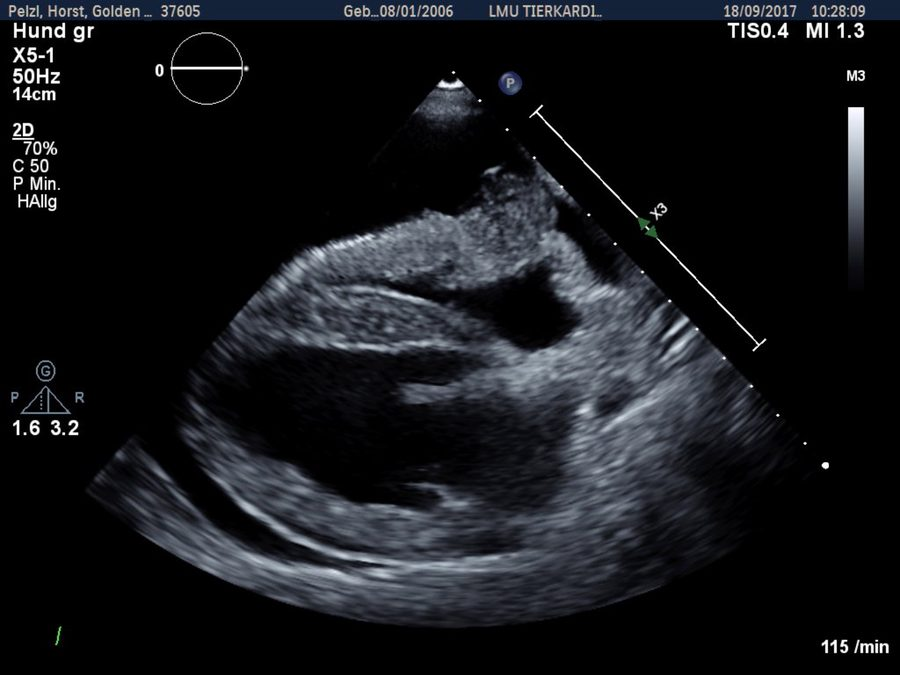
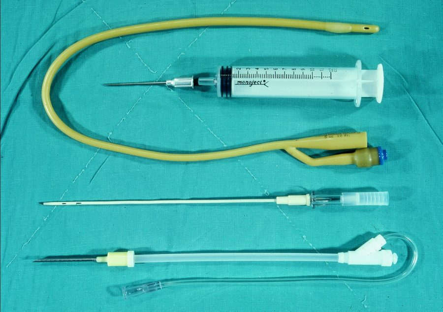

ESAVS Echocardiography · Chapter 14
心包膜積液與心包填塞的病因、臨床表現、Echo 典型特徵，以及常見心臟腫瘤的鑑別診斷與預後。
心臟周圍無回音區（+/- 纖維蛋白）、心臟於積液中擺盪（swinging heart）、腔室因受壓變小；填塞時可見右心房於舒張晚期至收縮期塌陷
心包內壓升高壓迫心臟，影響舒張期充盈，導致靜脈壓上升；中度壓迫呈漸進性右心衰竭徵象，急性重度壓迫則呈現低心輸出量休克甚至猝死
血管肉瘤、心底腫瘤、間皮瘤、淋巴瘤等腫瘤；特發性出血性心包炎；創傷（醫源性或外傷）；凝血功能異常；心包囊腫（罕見）；心臟破裂（尤其犬 LA 破裂）
充血性心衰竭、低白蛋白血症、腹膜心包疝氣
細菌／黴菌感染；無菌性：特發性心包炎、FIP
| 病因 | 預後 |
|---|---|
| 特發性出血性心包炎（Idiopathic hemorrhagic pericarditis） | 良好至極佳（部分需心包切除術） |
| 血管肉瘤（Hemangiosarcoma） | 差（各期皆然）；單純心包穿刺中位存活期約 11 天，手術+化療中位存活期約 175 天 |
| 心底腫瘤（Heart base tumor） | 短期尚可，長期保守至差；心包切除術後中位存活期約 730 天（未做約 42 天） |
| 間皮瘤（Mesothelioma） | 差，中位存活期約 13.6 個月（心包切除＋化療） |
| 感染性心包炎 | 保守至尚可（及早心包切除有幫助） |

